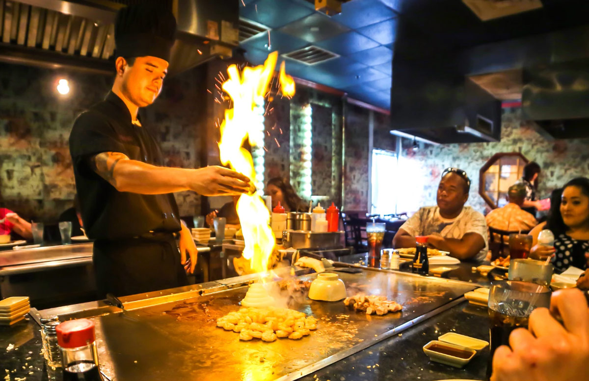

Join Us
Merging fun and high-quality ingredients with casual dining, Flame is perfect for any event. Every moment is unforgettable and exciting.
-

- 
Merging fun and high-quality ingredients with casual dining, Flame is perfect for any event. Every moment is unforgettable and exciting.
At the Hibachi grill, one of our highly skillful and experienced chefs performs tricks and prepares food right at your table. Whether it be wanting to satisfy your hunger with delicious food or to be star-struck by a flaming volcano made out of onions, everyone ends up satisfied. Each table holds up to 8-12 people.
Please provide your email and join our newsletter to recieve notice on special promotions